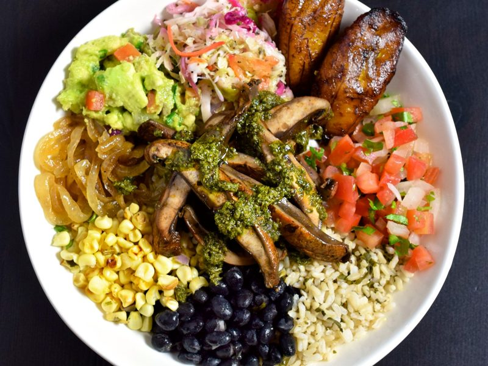
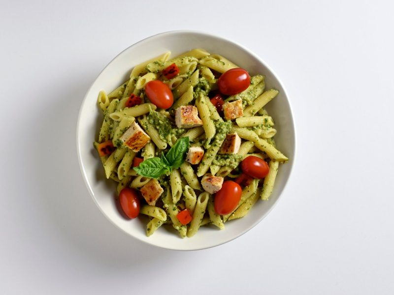
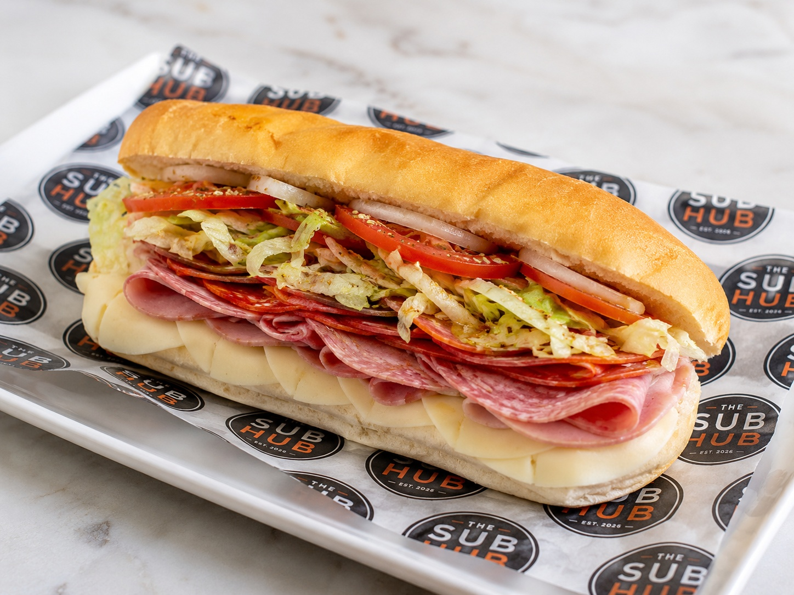
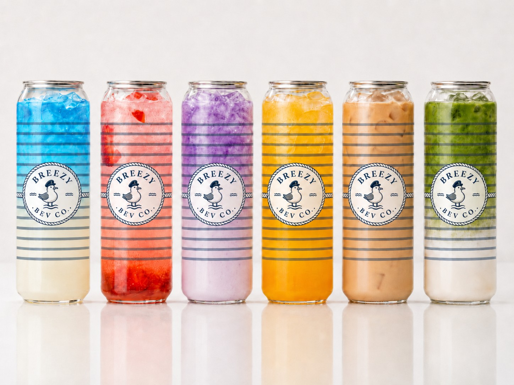

What Sets Us Apart
Three decades of refining what campus dining can be — built on caring, speed, safety, and technology.
Great campus dining is built on fundamentals most operators overlook. We have spent since 1986 perfecting them — so our university partners get quality, speed, and safety without compromise.

Great customer service is built on the fundamentals of caring. We hire employees who intrinsically care for others, who are conscientious about doing a great job, and who care about our community. From there, we train and empower our staff to do what is best for our customers.

Busy schedules and short lunch periods demand operations optimized for speed. Fast food often comes with a negative connotation of lower quality — we challenge that belief and have tailored our operations to thrive in a quick-service environment.
Food safety is a top priority. Operating in partnership under larger brands, we understand our reputation reflects directly on our university partners. We focus on offering a majority of items free from the big-8 allergens, providing ample options for dietary restrictions, and use the latest food-safety technology.

New technology lets us dramatically improve the customer experience through mobile and web ordering, smart pickup kiosks, and digital displays. We also use Bluetooth sensor temperature monitoring and digital safety logs to ensure compliance with our HACCP plan.

We are committed to reducing waste within our operations. We use eco-friendly packaging that is 100% recyclable and compostable, food-management software to eliminate food waste, and energy-efficient equipment wherever possible.